L'ecotrail 2024
 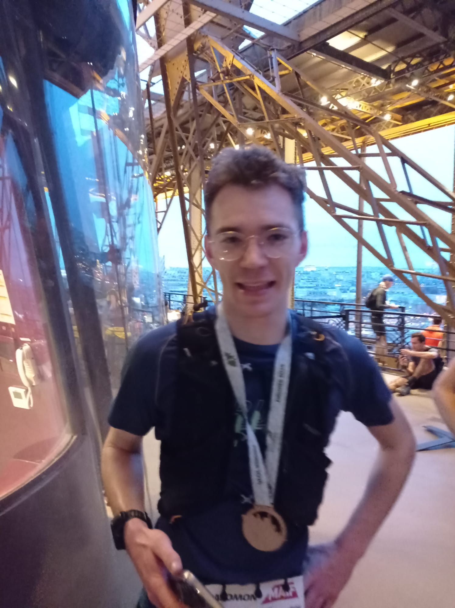
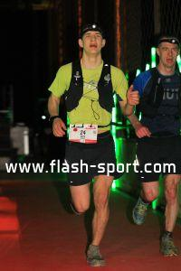
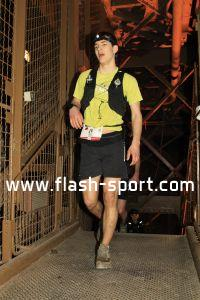
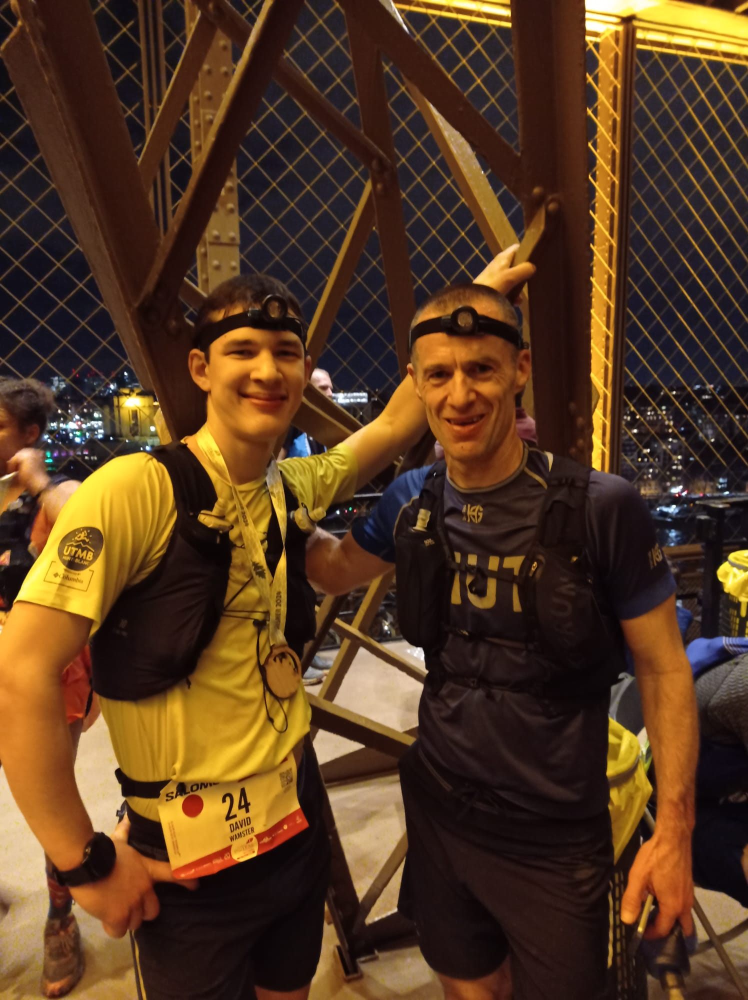
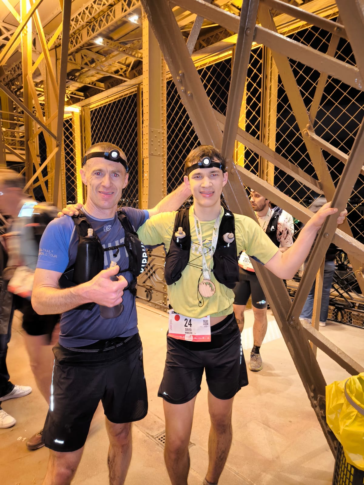
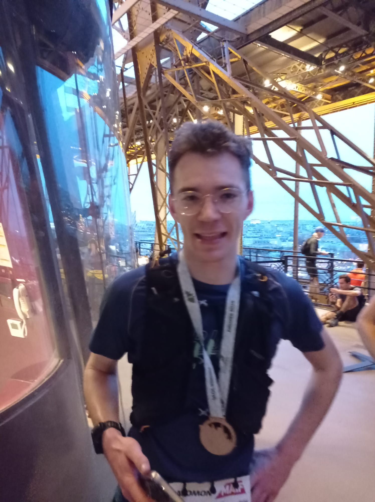
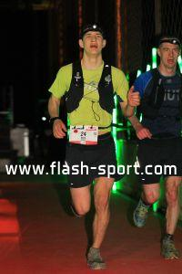
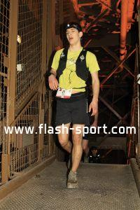
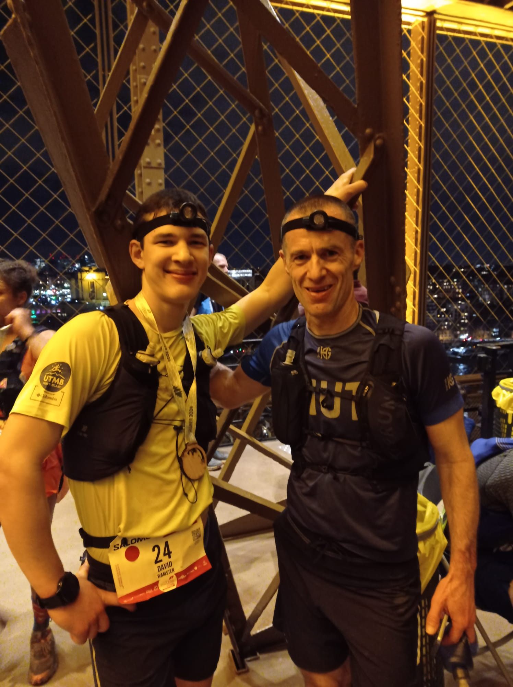
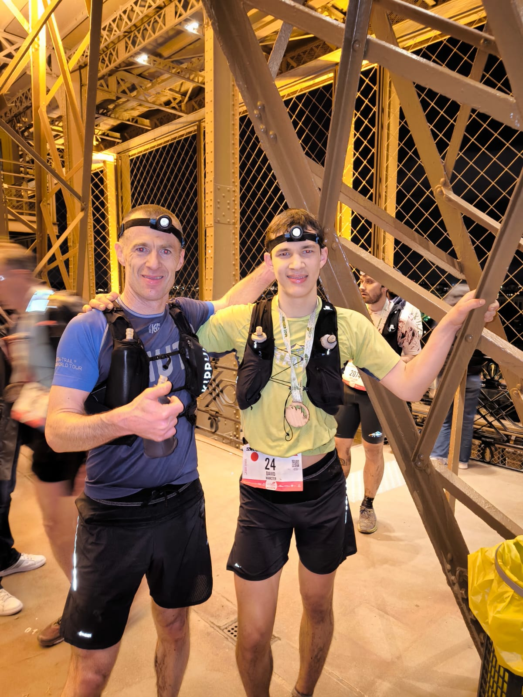
Cette Course était une surprise !
J'ai appris que je participais le jour matin même après m'être tranquillement réveillé à 9h.
Mon père ma proposé son dossard car 1 semaine après s'être tordu la cheville, il ressentait encore un peu de douleur.
Je n'est donc fait aucun entrainement spécifique (je n'avais pas couru depuis 3 semaines).
Ansi, mon père me donne toutes les affaires qu'il avait prévu la veille, et je prend le départ avec mon willy. Au bout de 15-20 Km je suis déjà fatigué. Après le ravitaillement (23km), mon père décide de m'accompagner sur tout le reste de la course. Je marche un peu et m'arrête à cause de crampes avant de repartir de plus belle.
Le reste de la course se résume a course lente et marche dans les montées. Courrir me fatigue tellement que j'attends les monté avec impatience pour y marcher. Arriver à 43 Km je suis heureux, j'ai dépasser mon reccord de distance. A 50 km, on voit enfin au loin l'objectif : la tour eiffel. Il reste encore 30 km mais ils s'enchainent comme les autres.
Les 10 derniers kilomètre sont les plus rapides mais aussi les plus long. On longe les bords de seine parisien en ayant toujours l'objectif en visuelle. L'objectif motive, et je cours comme une machine à environ 14 km/h mais le temps parait très long. Finalement, j'y arrive au pied de la tour effeil. J'y monte, il n'y a aucun controle, donc mon père qui m'accompagnait jusque là monte aussi avec moi.
Je finis donc en 9h40. mon frère a finis en 7h40 et si mon père ne m'avait pas donné sont dossard, il l'aurait bouclé en 6h40. Conclusion: c'est mieux d'être entrainé (mais sans entrainement, ça se tente quand même).
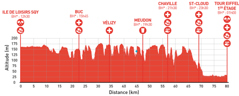Résultat